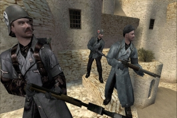
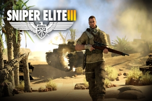

Home
Games
Over deze site
Suggesties
Wolfenstein
Wolfenstein : The new Order
Europa, 1946. De Tweede Wereldoorlog is woedt in Europa. Waar eens de geallieerden het voordeel hadden, Draaiden de nazi's het tij om ...
Wolfenstein
Het speelt zich af in het fictieve stadje "Isenstadt" tijdens de Tweede Wereldoorlog, waar de nazi's de macht hebben gegrepen om de zeldzame ...

Wolfenstein : Enemy Territory
Wolfenstein: Enemy Territory is een gratis en open source multiplayer first-person shooter tijdens de Tweede wereldoorlog ...
Return to castle Wolfenstein
In Return to Castle Wolfenstein speelt de speler als Amerikaanse soldaat die de naam William Joseph "B.J." Blazkowicz draagt. Deze wordt ook Agent two genoemd. Het verhaal speelt zich af in de Tweede Wereldoorlog.
Wolfenstein 3D
Het is een van de eerste videospellen dat door de ogen van het personage wordt gespeeld (first-person shooter). De game was voor zijn tijd revolutionair ...
Sniper Elite

Sniper Elite 3
Het nieuwste hoofdstuk in de bekroonde serie, SNIPER ELITE 3 neemt spelers aan de meedogenloze nog exotische terrein van Noord-Afrika in een woeste strijd tegen ...
Sniper Elite V2
In de donkere dagen van het einde van de Tweede Wereldoorlog te midden van de ruïnes van Berlijn, kan een kogel de geschiedenis veranderen ...
Sniper Elite
Als de Tweede Wereldoorlog ten einde loopt en de eerste geheime veldslagen van de Koude oorlog beginnen. Gevangen in een strijd van leven en dood tussen Russen en Duitsers in het verwoeste Berlijn ...
Call of Duty
Call of Duty: World at War
World at War begint met een overzicht van de Japanse expansie en hoe de VS daartegen optraden. De VS tekenden een embargo waardoor Japan ongeveer 90% van zijn olietoevoer verloor ...
Call of Duty: Roads to Vicory
In de campaign mode zijn meerdere missies beschikbaar die zich afspelen in de Tweede Wereldoorlog. Er zijn 3 campagnes in het spel: Amerikaanse, Canadeese, en de Britse campaign ...
Call of Duty 3
De single player is gemodelleerd naar de Normandische breakout, waar de Britse, Canadese, Poolse, Amerikaanse en Franse verzet wordt teruggeduwd in het dorp Chambois, Frankrijk, ook bekend als de Falaise Gap ...
Call of Duty 2
In de singleplayermodus volgt de speler een bepaalde verhaallijn. Door bepaalde opdrachten en orders met succes uit te voeren kan de speler nieuwe missies starten.
Call of Duty
Als eerste wordt aan de kant van de Amerikanen gevochten, men wordt in deze campaign gedropt achter de vijandelijke linies en moet zich een weg vechten door de verschillende missies ...
Free 2 Play
Heroes and generals
Heroes & Generals is een F2P MOFPS met een strategische multiplayer-campaign, Gezet in het midden van de Tweede Wereldoorlog ...
War Thunder
U kunt de ongeëvenaarde intensiteit van de luchtgevechten in een fighter te voelen, de beslissende kracht als commandant van een zware strategische bommenwerper ...
World of Tanks
Spelers kunnen door middel van spelen nieuwe onderdelen ontwikkelen en kopen, en zo betere tanks ontwikkelen. De tankmodellen komen voor het grootste deel uit de jaren 30 tot '60 ...